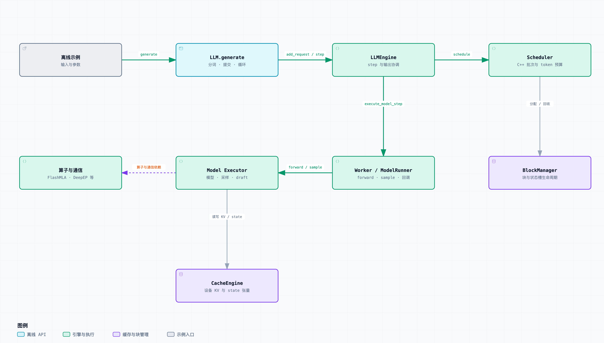

01 / DEEPINFER ATLAS
架构总览
从 LLM.generate 到调度、模型执行与设备缓存，理解 DeepInfer 模块如何协作。
先理解它在协调什么
模型每生成一段文本，都要反复执行计算、选择下一个 token，并保留此前上下文的中间结果。推理引擎负责把这些工作组织成批次，让计算与显存使用配合起来。DeepInfer 当前开源版本提供离线推理入口，以及调度、模型和采样运行时；官方还提供了针对支持硬件的算子与并行实现。

Model Executor 是 model_executor/ 目录的概括，不是一个同名单类。省略回调、rank 复制和生成循环，避免把架构误读成完整时间线。
沿职责理解九个节点
- 离线示例
- 创建 LLM、准备 prompts 与采样参数、调用 generate，最后解码并输出结果。示例通过
launch_dp启动数据并行执行；主图把多个 rank 折叠为一个逻辑入口。 LLM.generate()- 面向调用者的批量 API。必要时把文本转为 token ID，逐项提交请求，循环运行引擎，最终按输入顺序返回结果。它承担了离线循环，当前发布没有在线 serving wrapper。
LLMEngine- 协调请求状态、tokenizer、调度器与 Worker。
step()取得批次后下发执行；Worker 通过回调让引擎处理已就绪输出。 Scheduler- C++ 调度器组织 waiting / running 队列，决定这一步处理哪些序列、多少 token，并生成模型需要的元数据。它既处理 prefill，也处理 decode；每步的批次不是一成不变的。
BlockManager- 管理可分配块编号与引用计数，使调度器知道缓存空间何时够用、何时可以回收。它不执行 attention，也不负责跨机器长期存储。引擎还可建立独立的 state slot 管理器。
Worker / ModelRunner- Worker 安排 forward、同步边界、采样与输出回调；ModelRunner 准备设备输入，选择 CUDA graph replay 或模型调用。多 rank 的方法广播与各 rank 计算在图中被折叠。
- Model Executor
- 模型类、attention / MoE 层、Sampler 和 draft 实现所在的目录。
DeepseekForCausalLM.sample()把主模型输出交给 Sampler。MoE（Mixture of Experts）指每个 token 只路由到部分专家计算的模型结构。 CacheEngine- 分配并组织设备侧的 KV blocks 与 state blocks。KV cache 保存 attention 已算出的键/值相关中间结果，使后续 token 可复用上下文；在此模型中还涉及压缩、滑动窗口与状态布局。图中“读写”表示模型使用其暴露的张量，不是每层都调用 CacheEngine 对象方法。
- 算子与通信
- FlashMLA、DeepGEMM、DeepEP、TileLang 等承载具体计算与数据交换。它们是执行层依赖，不能从目录依赖图推断为每个请求都顺序调用所有算子。
三种关系，分别怎么读
| 关系 | 例子 | 含义 |
|---|---|---|
| 控制 | Engine → Worker | 下发 execute_model_step；不意味着 CPU 等待整个设备计算结束。 |
| 数据 / 资源 | 模型 → 设备缓存 | 读取/更新运行时缓存张量；调度器另行分配可用块编号。 |
| 实现依赖 | Model Executor ⇢ 算子 | 依赖后端实现；没有定义统一同步调用顺序。 |
模型输出沿 Worker → Engine 回调进入 C++ 输出处理，随后 LLM 聚合。为了让主图保持清晰，这条回路放在请求时序中展开；默认 decode 的 CPU / 设备重叠则在异步调度专题中展开。
先保留一个重要边界
设备缓存已经实现，完整缓存服务仍需补齐。当前仓库中的张量布局、块管理和保存扩展点，与官方生产系统中的长期 KVCache Storage、缓存命中路由和跨 DP 负载均衡分属不同层次。请继续阅读开源边界。